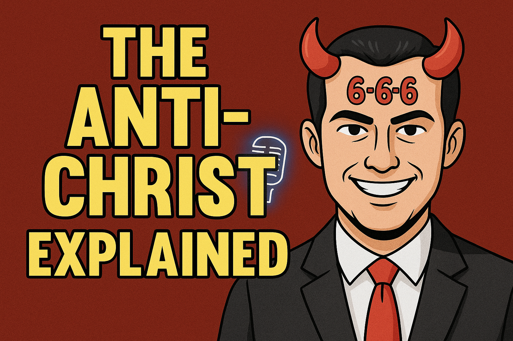
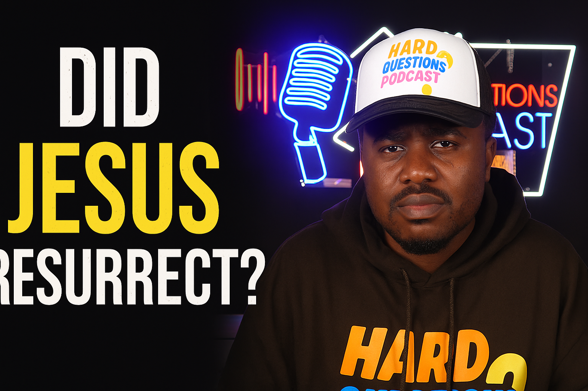
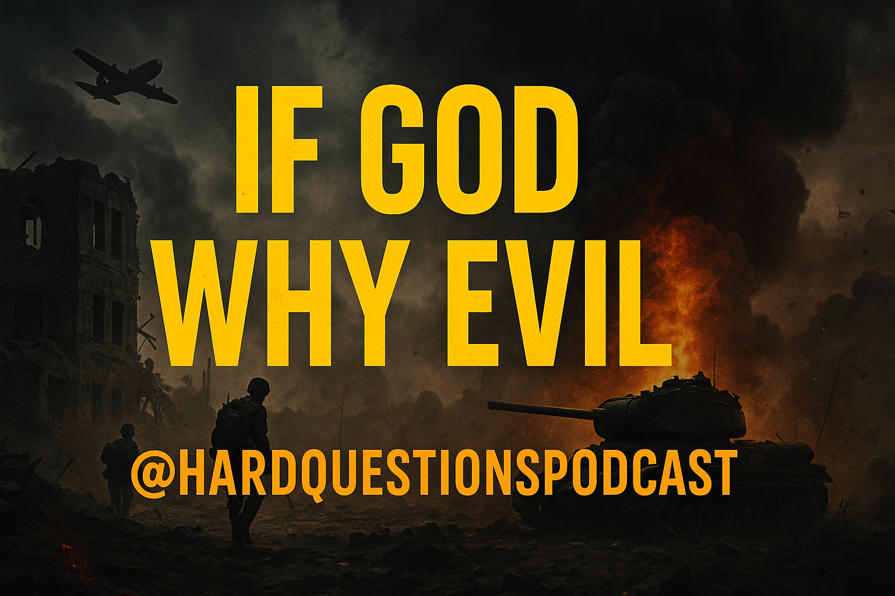

Episode 19: Why did God not SAVE Charlie Kirk ?
Oliver explores why God did not save Charlie.
Watch NowEpisode 17: Sudan, Nigeria and true Islam exposed
Exposing true Islam. Christians killed in Nigeria and Sudan civil war
Watch NowEpisode 15: Tanzania Chaos, Globalist Agenda -
Discussing the recent chaos Tanzania and how Globalist are involved
Watch Now

Episode 13: The Anti Christ Explained
Who is the Anti Christ revealed in the bible ?
Watch NowEpisode 12: Is Islam a religion of peace
Is Islam a religion of peace as we are often told. Well I dont think so. Find out why..
Watch NowEpisode 11: I disagree with you but dont want you dead
This is a Charlie Kirk tribut encouring dialogue over violence
Watch NowEpisode 10: Charlie Kirk is Dead.Will America recover ?
Will America recover from this devistating news or not ?
Watch Now
Episode 9: Did Jesus resurrect ?
Did Jesus come out of the grave as christians have claimed for many years or did he not ?
Watch Now
Episode 8: If God, Why Evil ?
If God exist like people cclaim, why is there so much evil in the world ?
Watch NowEpisode 7: We are not sinners
Did you know that the christian is not a sinner like many people believe ?
Watch NowEpisode 5: Why is Jesus different
In world of many religous figures. What makes the Nazarene different ?.
Watch NowEpisode 4: The truth about christmas
Exposing Santa clause, discussing Christmass songs and more
Watch NowEpisode 2: Kamala Harris the Witch
Well watch the video for yourself and make your own conclusions
Watch NowEpisode 1: Trump- Americas Last Hope
Say what you want about him. I believe he is fullfilling a divine purpose. Find out why ?
Watch Now